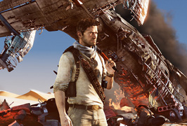
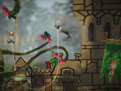

WINGAMES

Uncharted 3- Prévia
Novaamente exclusivo para playstation 3 e com desenvolvimento pela Naughty Dog Inc.
Ucharted 3: Drake's Decepticon mostrará Nathan Drake em busca da lendária "Atlântida das Areias",
a cidade de Rub' al Khali. A jornada levará o caçador de fortunas ao coração do deserto da Arábia,
em uma busca que colocará ele e seu mentor Victor ullivan contra uma organização oculista clandestina e
seu líder impiedoso. O lançameto acontece dia 1o. de Novembro de 2011.
''''

Little Big Planet 2 - Prévia
"LittleBigPlanet 2" , assim como o primeiro game lançado em 2008, criar outros jogos de plataform,
com personagens e cenário próprios, mas a proposta do novo titulo é ser uma "plataforma de games" ,
permitindo ao jogador desbravar para outros gêneros, de quebra-cabeças a tiros. O jogador controla pequeno
sere chamados de Sackboy e pode participar de partidas e de criações de fases com outros jogadores.
Até o momento, existem mai de 2 Milhões de fases criadas pelos gamers em todo o mundo no primeiro jogo.
background="bg.jpg" text="f#ffffff" bgcolor="#000000" >
WINGAMES

Uncharted 3- Prévia
Os gastos dos americanos com jogos eletrônicos devem somar de US$ 15,4 bilhões em 2010,
segundo daddos preliminares da consultoria NPD Group.
A soma que engloba games para console, computador, celular, serviços on-line e redes sociais, deve representar
estabilidade ou queda de até 1% em relação a 2009, sinaliza o NPD, que pretende divulgar os dados cosolidados de 2010 em dados deste ano.
No lançamento do game "Word of warcraft: Cataclysm" fãns fizeram filas.(Fotos: Casey Rodrigues/AP)